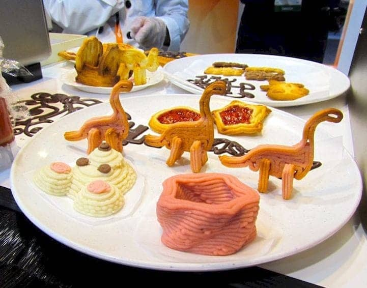

Topic information
- Category: Technological Innovations
- Posted on: 10 January, 2022
- Author: Aditya Verma
What is 3D Printer?
Digital fabrication technology, also referred to as 3D printing or additive manufacturing, creates physical objects from a geometrical representation by successive addition of materials. 3D printing technology is a fast-emerging technology. Nowadays, 3D Printing is widely used in the world. 3D printing technology increasingly used for the mass customization, production of any types of open source designs in the field of agriculture, in healthcare, automotive industry, locomotive industry and aviation industries. 3D printing technology can print an object layer by layer deposition of material directly from a computer aided design (CAD) model. This paper presents the overview of the types of 3D printing technologies, the application of 3D printing technology and lastly, the materials used for 3D printing technology in manufacturing industry.
How Does 3D Printing Work?
It all starts with a 3D model. You can opt to create one from the ground up or download it from a 3D library.
3D Software
There are many different software tools available. From
industrial grade to open source. We’ve created an overview on our 3D software page.
We often recommend beginners to start with Tinkercad. Tinkercad is free and works in your browser, you don’t
have to install it on your computer. Tinkercad offers beginner lessons and has a built-in feature to export
your model as a printable file e.g .STL or .OBJ.
Now that you have a printable file, the next step is to prepare it for your 3D printer. This is called
slicing.
Slicing: From printable file to 3D Printer
Slicing basically means slicing up a 3D model into hundreds
or thousands of layers and is done with slicing software.
When your file is sliced, it’s ready for your 3D printer. Feeding the file to your printer can be done via
USB, SD or Wi-Fi. Your sliced file is now ready to be 3D printed layer by layer.
3D Printing Industry
Adoption of 3D printing has reached critical mass as those
who have yet to integrate additive manufacturing somewhere in their supply chain are now part of an
ever-shrinking minority. Where 3D printing was only suitable for prototyping and one-off manufacturing in
the early stages, it is now rapidly transforming into a production technology.
Most of the current demand for 3D printing is industrial in nature. Acumen Research and Consulting forecasts
the global 3D printing market to reach $41 billion by 2026.
As it evolves, 3D printing technology is destined to transform almost every major industry and change the
way we live, work, and play in the future.
Examples of 3D Printing
3D printing encompasses many forms of technologies and materials as 3D printing is being used in almost all industries you could think of. It’s important to see it as a cluster of diverse industries with a myriad of different applications.
A few examples:
- Consumer products (eyewear, footwear, design, furniture)
- Industrial products (manufacturing tools, prototypes, functional end-use parts)
- Dental products
- Prosthetics
- Architectural scale models & maquettes
- Reconstructing fossils
- Replicating ancient artefacts
- Reconstructing evidence in forensic pathology
- Movie props
Rapid Prototyping & Rapid Manufacturing
Companies have used 3D printers in their design process to create prototypes since the late seventies. Using 3D printers for these purposes is called rapid prototyping.
Why use 3D Printers for Rapid Prototyping?
In short: it’s fast and relatively cheap. From idea, to 3D
model to holding a prototype in your hands is a matter of days instead of weeks. Iterations are easier and
cheaper to make and you don’t need expensive molds or tools.
Besides rapid prototyping, 3D printing is also used for rapid manufacturing. Rapid manufacturing is a new
method of manufacturing where businesses use 3D printers for short run / small batch custom manufacturing.
Automotive
Car manufacturers have been utilizing 3D printing for a
long time. Automotive companies are printing spare parts, tools, jigs and fixtures but also end-use parts.
3D printing has enabled on-demand manufacturing which has lead to lower stock levels and has shortened
design and production cycles.
Automotive enthusiasts all over the world are using 3D printed parts to restore old cars. One such example
is when Australian engineers printed parts to bring a Delage Type-C back to life. In doing so, they had to
print parts that were out of production for decades.
Aviation
The aviation industry uses 3D printing in many different
ways. The following example marks a significant 3D printing manufacturing milestone: GE Aviation has 3D
printed 30,000 Cobalt-chrome fuel nozzles for its LEAP aircraft engines. They achieved that milestone in
October of 2018, and considering that they produce 600 per week on forty 3D printers, it’s likely much
higher than that now.
Around twenty individual parts that previously had to be welded together were consolidated into one 3D
printed component that weighs 25% less and is five times stronger. The LEAP engine is the best selling
engine in the aerospace industry due to its high level of efficiency and GE saves $3 million per aircraft by
3D printing the fuel nozzles, so this single 3D printed part generates hundreds of millions of dollars of
financial benefit.
GE’s fuel nozzles also made their way into the Boeing 787 Dreamliner, but it’s not the only 3D printed part in the 787. The 33-centimeter-long structural fittings that hold the aft kitchen galley to the airframe are 3D printed by a company called Norsk Titanium. Norsk chose to specialize in titanium because it has a very high strength-to-weight ratio and is rather expensive, meaning the reduction in waste enabled by 3D printing has a more significant financial impact than compared to cheaper metals where the costs of material waste are easier to absorb. Rather than sintering metal powder with a laser like most metal 3D printers, the Norsk Merke 4 uses a plasma arc to melt a metal wire in a process called Rapid Plasma Deposition (a form of Directed Energy Deposition) that can deposit up to 10kg of titanium per hour. A 2kg titanium part would generally require a 30kg block of titanium to machine it from, generating 28kg of waste, but 3D printing the same part requires only 6kg of titanium wire.
Construction
Is it possible to print a building? – yes it is. 3D printed
houses are already commercially available. Some companies print parts prefab and others do it
on-site.
Most
of the concrete printing stories we look at on this website are focused on large scale concrete printing
systems with fairly large nozzles for a large flow rate. It’s great for laying down concrete layers in a
fairly quick and repeatable manner. But for truly intricate concrete work that makes full use of the
capabilities of 3D printing requires something a little more nimble, and with a finer touch.
Consumer Products
When we first started blogging about 3D printing back in 2011, 3D printing wasn’t ready to be used as a production method for large volumes. Nowadays there are numerous examples of end-use 3D printed consumer products.

Footwear
Adidas’ 4D range has a fully 3D printed midsole and is
being printed in large volumes. We did an article back then, explaining how Adidas were initially releasing
just 5,000 pairs of the shoes to the public, and had aimed to sell 100,000 pairs of the AM-infused designs
by
2018.
With their latest iterations of the shoe, it seems that they have surpassed that goal, or are on their way
to
surpassing it. The shoes are available all around the world from local Adidas stores and also from various
3rd
party online outlets.
Eyewear
The market of 3D printed eyewear is forecasted to reach
$3.4 billion by 2028. A rapidly increasing section is that of end-use frames. 3D printing is a particularly
suitable production method for eyewear frames because the measurements of an individual are easy to process
in the end product.
But did you know it’s also possible to 3D print lenses? Traditional glass lenses
don’t start out thin and light; they’re cut from a much larger block of material called a blank, about 80%
of which goes to waste. When we consider how many people wear glasses and how often they need to get a new
pair, 80% of those numbers is a lot of waste. On top of that, labs have to keep huge inventories of blanks
to meet the custom vision needs of their clients. Finally, however, 3D printing technology has advanced
enough to provide high-quality, custom ophthalmic lenses, doing away with the waste and inventory costs of
the past. The Luxexcel VisionEngine 3D printer uses a UV-curable acrylate monomer to print two pairs of
lenses per hour that require no polishing or post-processing of any kind. The focal areas can also be
completely customized so that a certain area of the lens can provide better clarity at a distance while a
different area of the lens provides better vision up close.
Jewelry
There are two ways of producing jewelry with a 3D printer. You can either use a direct or indirect production process. Direct refers to the creation of an object straight from the 3D design while indirect manufacturing means that the object (pattern) that is 3D printed eventually is used to create a mold for investment casting.
Healthcare
It’s not uncommon these days to see headlines about 3D
printed implants. Often, those cases are experimental, which can make it seem like 3D printing is still a
fringe technology in the medical and healthcare sectors, but that’s not the case anymore. Over the last
decade, more than 100,000 hip replacements have been 3D printed by GE Additive.
The Delta-TT Cup designed by Dr. Guido Grappiolo and LimaCorporate is made of Trabecular Titanium, which is
characterized by a regular, three-dimensional, hexagonal cell structure that imitates trabecular bone
morphology. The trabecular structure increases the biocompatibility of the titanium by encouraging bone
growth into the implant. Some of the first Delta-TT implants are still running strong over a decade
later.
Another 3D printed healthcare component that does a good job of being undetectable is the hearing aid.
Nearly every hearing aid in the last 17 years has been 3D printed thanks to a collaboration between
Materialise and Phonak. Phonak developed Rapid Shell Modeling (RSM) in 2001. Prior to RSM, making one
hearing aid required nine laborious steps involving hand sculpting and mold making, and the results were
often ill-fitting. With RSM, a technician uses silicone to take an impression of the ear canal, that
impression is 3D scanned, and after some minor tweaking the model is 3D printed with a resin 3D printer. The
electronics are added and then it’s shipped to the user. Using this process, hundreds of thousands of
hearing aids are 3D printed each year.
Dental
In the dental industry, we see molds for clear aligners being possibly the most 3D printed objects in the world. Currently, the molds are 3D printed with both resin and powder based 3D printing processes, but also via material jetting. Crowns and dentures are already directly 3D printed, along with surgical guides.
Bio-printing
As of the early two-thousands 3D printing technology has been studied by biotech firms and academia for possible use in tissue engineering applications where organs and body parts are built using inkjet techniques. Layers of living cells are deposited onto a gel medium and slowly built up to form three dimensional structures. We refer to this field of research with the term: bio-printing.
Food
Additive manufacturing invaded the food industry long time ago. Restaurants like Food Ink and Melisse use this as a unique selling point to attract customers from across the world.
Education
Educators and students have long been using 3D printers in
the classroom. 3D printing enables students to materialize their ideas in a fast and affordable way.
While additive manufacturing-specific degrees are fairly new, universities have long been using 3D printers
in other disciplines. There are many educational courses one can take to engage with 3D printing.
Universities offer courses on things that are adjacent to 3D printing like CAD and 3D design, which can be
applied to 3D printing at a certain stage.
In terms of prototyping, many university programs are turning to printers. There are specializations in
additive manufacturing one can attain through architecture or industrial design degrees. Printed prototypes
are also very common in the arts, animation and fashion studies as well.